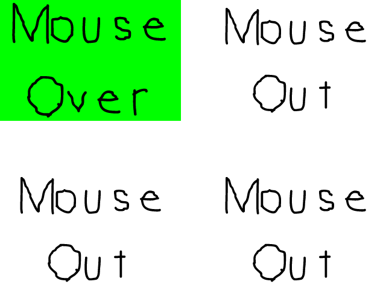

Mouse Events

Last Updated: Jun 7th, 2025
Here we're going to make some buttons that respond to mouse input.class LButton
{
public:
//Button dimensions
static constexpr int kButtonWidth = 300;
static constexpr int kButtonHeight = 200;
//Initializes internal variables
LButton();
//Sets top left position
void setPosition( float x, float y );
//Handles mouse event
void handleEvent( SDL_Event* e );
//Shows button sprite
void render();
private:
enum class eButtonSprite
{
MouseOut = 0,
MouseOverMotion = 1,
MouseDown = 2,
MouseUp = 3
};
//Top left position
SDL_FPoint mPosition;
//Currently used global sprite
eButtonSprite mCurrentSprite;
};
Here is our buttons class. It has constants for the dimensions, a constructor, a function to set its position, a function to handle events, and a function to render it.
Then we have an enumeration to define the different mouse states with their corresponding sprite, an SDL_FPoint to define the position of the button, and an
Then we have an enumeration to define the different mouse states with their corresponding sprite, an SDL_FPoint to define the position of the button, and an
eButtonSprite to define the current sprite index.
//LButton Implementation
LButton::LButton():
mPosition{ 0.f, 0.f },
mCurrentSprite{ eButtonSprite::MouseOut }
{
}
void LButton::setPosition( float x, float y )
{
mPosition.x = x;
mPosition.y = y;
}
Here are the functions used to initialize and position the button.
void LButton::handleEvent( SDL_Event* e )
{
//If mouse event happened
if( e->type == SDL_EVENT_MOUSE_MOTION || e->type == SDL_EVENT_MOUSE_BUTTON_DOWN || e->type == SDL_EVENT_MOUSE_BUTTON_UP )
{
//Get mouse position
float x = -1.f, y = -1.f;
SDL_GetMouseState( &x, &y );
//Check if mouse is in button
bool inside = true;
//Mouse is left of the button
if( x < mPosition.x )
{
inside = false;
}
//Mouse is right of the button
else if( x > mPosition.x + kButtonWidth )
{
inside = false;
}
//Mouse above the button
else if( y < mPosition.y )
{
inside = false;
}
//Mouse below the button
else if( y > mPosition.y + kButtonHeight )
{
inside = false;
}
Here is where we start handling mouse events.
First we check if it's a
If a mouse event happened, we then get the mouse position with SDL_GetMouseState. We then check if the mouse is inside the button. We do this by testing if it is left of the button, right of the button, above the button, or below the button. If it is not left/right/above/below the button, then it must be inside.
First we check if it's a
SDL_EVENT_MOUSE_MOTION type which corresponds with an SDL_MouseMotionEvent or a SDL_EVENT_MOUSE_BUTTON_DOWN/SDL_EVENT_MOUSE_BUTTON_UP type which
corresponds with an SDL_MouseButtonEvent.If a mouse event happened, we then get the mouse position with SDL_GetMouseState. We then check if the mouse is inside the button. We do this by testing if it is left of the button, right of the button, above the button, or below the button. If it is not left/right/above/below the button, then it must be inside.
//Mouse is outside button
if( !inside )
{
mCurrentSprite = eButtonSprite::MouseOut;
}
//Mouse is inside button
else
{
//Set mouse over sprite
switch( e->type )
{
case SDL_EVENT_MOUSE_MOTION:
mCurrentSprite = eButtonSprite::MouseOverMotion;
break;
case SDL_EVENT_MOUSE_BUTTON_DOWN:
mCurrentSprite = eButtonSprite::MouseDown;
break;
case SDL_EVENT_MOUSE_BUTTON_UP:
mCurrentSprite = eButtonSprite::MouseUp;
break;
}
}
}
}
If the mouse is outside the button, we set it to the mouse out sprite. If the mouse is inside the button, we set the mouse over sprite on a mouse motion, and mouse up/down sprite on mouse button up/down.
void LButton::render()
{
//Define sprites
SDL_FRect spriteClips[] = {
{ 0.f, 0 * kButtonHeight, kButtonWidth, kButtonHeight },
{ 0.f, 1 * kButtonHeight, kButtonWidth, kButtonHeight },
{ 0.f, 2 * kButtonHeight, kButtonWidth, kButtonHeight },
{ 0.f, 3 * kButtonHeight, kButtonWidth, kButtonHeight },
};
//Show current button sprite
gButtonSpriteTexture.render( mPosition.x, mPosition.y, &spriteClips[ static_cast( mCurrentSprite ) ] );
}
In the rendering function, we define the clip rectangles for the sprites and render the current sprite based on the input from the event handler.
//Place buttons
constexpr int kButtonCount = 4;
LButton buttons[ kButtonCount ];
buttons[ 0 ].setPosition( 0, 0 );
buttons[ 1 ].setPosition( kScreenWidth - LButton::kButtonWidth, 0 );
buttons[ 2 ].setPosition( 0, kScreenHeight - LButton::kButtonHeight );
buttons[ 3 ].setPosition( kScreenWidth - LButton::kButtonWidth, kScreenHeight - LButton::kButtonHeight );
Before we enter the main loop, we define the buttons by placing them in each corner of the screen.
//Get event data
while( SDL_PollEvent( &e ) == true )
{
//If event is quit type
if( e.type == SDL_EVENT_QUIT )
{
//End the main loop
quit = true;
}
//Handle button events
for( int i = 0; i < kButtonCount; ++i )
{
buttons[ i ].handleEvent( &e );
}
}
Here we're passing the event from the event loop to our buttons.
//Fill the background
SDL_SetRenderDrawColor( gRenderer, 0xFF, 0xFF, 0xFF, 0xFF );
SDL_RenderClear( gRenderer );
//Render buttons
for( int i = 0; i < kButtonCount; i++ )
{
buttons[ i ].render();
}
//Update screen
SDL_RenderPresent( gRenderer );
}
And here we're rendering the buttons to the screen.